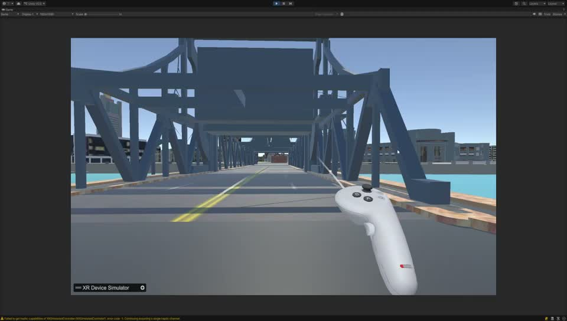
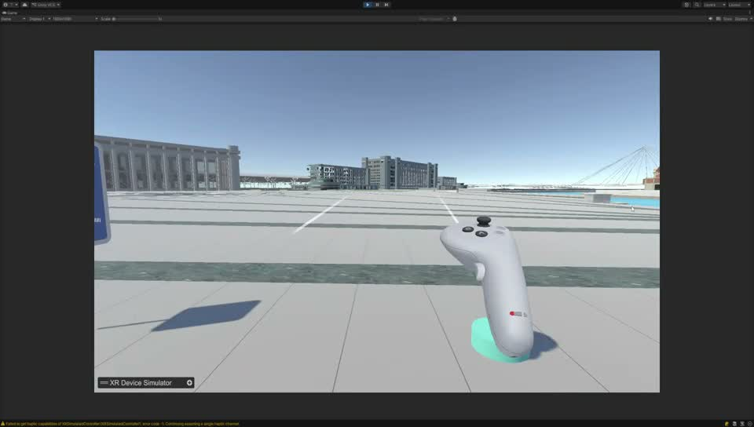
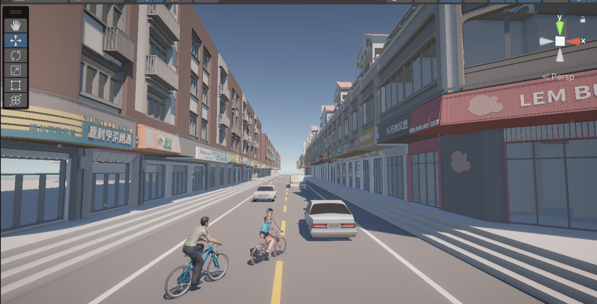
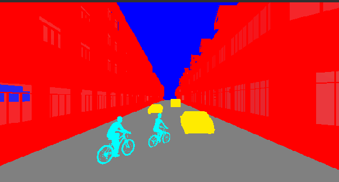
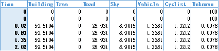
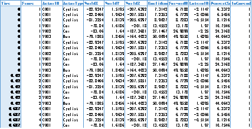

REAL-TIME SPACES / UNITY & VR
走进城市，理解场景。
两个独立工程：城市 VR 漫游，以及 Unity 场景分析 Demo。
PROJECT 01 / CITYVR WALK
1.CityVR Walk · 城市 VR 漫游
在 Unity 中组织城市街道、桥梁与开敞空间，通过第一人称视角与控制器操作探索场景，观察人在移动中看到的空间关系。
Scene3a · 城市漫游演示 · 约 2 分 26 秒。视频记录了 Unity 编辑器中的运行画面与控制器模拟操作。
场景与空间
连续街道、交叉口、桥梁与广场构成不同尺度的空间片段，形成可观察的城市环境。
移动与观察
通过视点移动与朝向变化，查看建筑界面、道路边界和空间中的位置关系。
交互反馈
视频中的控制器、射线与位置反馈，为漫游中的选择和移动提供可见的操作线索。


PROJECT 02 / UNITY SCENE ANALYSIS
2.Unity 场景分析 Demo
这是独立于 CityVR Walk 的另一个 Unity 工程。围绕街景重建、场景语义分类与空间数据提取进行 Demo 分析，并结合结果梳理 URP 管线与分析画面输出的实现思路。


把场景转成可以分析的信息。
语义比例与距离记录

类别表包含 Time、Building、Tree、Road、Sky、Vehicle、Cyclist 与 Unknown。示例有效行中建筑约 59.51%、道路约 28.93%、天空约 8.90%，可用于描述当前视点的可见构成。

距离表以时间、帧与对象信息连接位置和距离字段，用于追踪场景对象与观察视点的关系。截图分辨率有限，保留原表供放大查看。
我对 URP 管线的理解
我关注的不只是让场景显示出来，还包括如何组织不同用途的渲染输出：普通画面服务于空间体验，分类画面服务于测量分析。URP 的可配置渲染器和可插入渲染阶段，为这两类任务提供了可扩展的组织方式。
01 · 配置不等于渲染步骤
URP Asset 管理管线层面的质量与渲染选项；Renderer Data 组织具体渲染器及其功能。相机、场景对象与当前平台共同影响一次渲染的结果。
02 · 普通画面与分析画面分工
普通画面保留光照与材质；语义画面更关心类别编码，应避免光照、色调映射和混色改变类别值。两路结果需要保持视点与可见性条件一致。
03 · Renderer Feature 与 Render Pass
可通过 Scriptable Renderer Feature 向管线加入自定义 Render Pass，在指定阶段绘制筛选后的对象或处理输出。这是一种适合组织分类渲染的实现思路，具体 API 需对应 Unity 与 URP 版本。
04 · RenderTexture 与数据读回
分析图像可写入 RenderTexture，再按编码统计可见像素比例。应处理背景、抗锯齿边缘与 Unknown；若进行 GPU 数据读回，还需关注同步等待、分辨率与采样频率带来的开销。
05 · 画面指标与空间指标不同
像素占比描述相机视野中的构成，不等同于三维面积比例。对象距离需要明确参考点、坐标空间与距离定义，不能直接从像素比例推出。
06 · VR 中的稳定性与性能
VR 不只关注视觉效果，也要关注帧时间稳定性。分析输出会增加绘制或读回成本，应在目标设备测量，并按需要降低采样频率与分析纹理分辨率。
URP 部分为技术理解与实现路径说明；当前材料未包含工程中的管线配置、渲染脚本与性能测量，因此不将特定 Renderer Feature、读回方法或帧率数值写成已验证的实现。